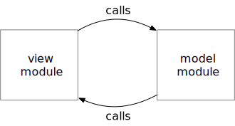
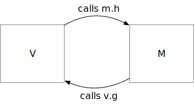
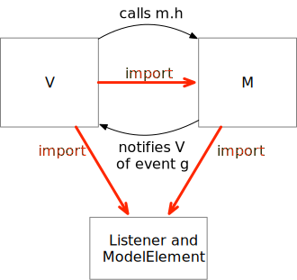

Notifiers#
Untangling GUIs with Model-View-Controller#
As we build larger projects, it becomes more and more important to divide them into parts, and to control the ways in which one part depends on another. We must do this not only at the level of individual functions and classes, but also at the coarser grain level of modules in separate files.
A particular case where we often need to divide a program into coarse-grain modules is applications with graphical user interfaces. Suppose, for example, that we are building an application that we want to run on MacOS, Linux, and Windows, or on Android and iPhone: There are some parts that will need to be specialized for each platform, and (hopefully) some parts that can be almost or fully independent of the platform. We don’t want to jumble those parts all up in the same source files!
Typically we might want at least three different files, or sets of files:
The graphics interaction component. This part would handle basic graphical interaction tasks like drawing a shape on the screen and determining which shape a user touched or clicked. It might contain classes like “Box” and “Menu”, and we might be able to reuse it for several different interactive programs. It might depend on a specific platform (say, Cocoa under MacOS or the equivalent Windows toolkit), and thus for a multi-platform application we might need more than one version of the graphics component.
Application logic, often called the model component. If our application is for pizza design, this is the component that knows that pineapple should never be added to pizza. As much as possible, we would like this component to be independent of the graphical interaction, and reusable across platforms.
Interaction logic, often called the view component. This is the part that knows that a pizza is round and that tomato sauce is red. It does not know much about pizzas and it does not know how the graphics component draws a circle, but it knows that it should draw circles of different sizes to indicate possible pizza sizes, and that when the user clicks on the middle circle it indicates a choice of a medium size pizza.
As soon as we start to sketch out the
relations among these modules, we
see a potential problem. The relation between the
view module and graphics is fine: The view
module will need to import the graphics module
to gain access to functions and classes for
drawing pizzas. But what about the relation
between the view module and the model (pizza) module?
Should the view module import the model
module, or vice versa? We want the graphical
depiction to be updated when the pizza changes,
so it seems like the model needs access to the
view to trigger updates. But when the user
clicks the picture of a medium size pizza, it
seems like the view needs access to the model to
set pizza size to medium. Each component
seems to depend on the other.
We need to break this circular dependence between model and view. There is a common, fairly standard way to break it, called the model-view-controller design pattern.
Notifiers#
Functions or methods in the view component need to call methods or functions in the model component when the user interacts, e.g., by touching or clicking a shape on the screen or by pressing a key on the keyboard. The model component will then do something and call methods or functions in the view component to indicate that some parts of screen representation should be updated. Thus parts of each module call parts in the other module.

Calls between the two components is
not a problem in itself, unless there
is an infinite recursive loop. We can
avoid that easily enough. The
problem is that each needs to “see”
the methods or functions in the other,
which typically means each module
needs to import the other. We need
to break the import cycle.
It is possible for functions or methods in module to call the other without importing that module. The trick involves inheritance and an abstract Listener class.
Let’s suppose we want a method in class
M to call a method in class V, and a
method in class V to call a different method
in class M. Note that this may not be
recursive at all: M.f calls V.g, and
V.g calls M.h; there is a cycle among
the objects but not among the methods.
class M:
def __init__(self):
self.the_V = None
def hook_up(self, v: 'V'):
self.the_V = v
def f(self):
self.the_V.g(self)
def h(self):
print("What goes around, comes around")
class V:
def __init__(self):
pass
def g(self, an_m: M):
an_m.h()
v = V()
m = M()
m.hook_up(v)
m.f()
What goes around, comes around
If we place M and V in different modules,
each module will have to import the other.

We can’t break the cycle in calls (and we
don’t want to), but we can break the cycle
in import by interposing a third module
with abstract base classes. We can
think of the abstract base classes as
defining some wires that can be connected
in the concrete classes.
class Listener:
"""Abstract base class for classes in View component"""
def notify(self, event: str):
raise NotImplementedError("Notify has not been implemented")
class ModelElement:
"""Abstract base class for classes in Model component"""
def __init__(self):
self.listeners = []
def add_listener(self, listener: Listener):
self.listeners.append(listener)
def notify_all(self, event: str):
for listener in self.listeners:
listener.notify(self, event)
class M(ModelElement):
def __init__(self):
super().__init__()
# Might have more of its own initialization here
def f(self):
# Instead of self.the_V.g()
self.notify_all("g")
def h(self):
print("What goes around, comes around")
class V(Listener):
def __init__(self):
pass
def notify(self, an_m: M, event: str):
# Instead of a call to method g, we
# might get an event "g"
if event == "g":
an_m.h()
The revised version is more complex,
but it essentially duplicates the calling
relation between methods in M and V from
above. There are a couple of differences:
Instead of the M object having a reference
to exactly one V element, it can be hooked
to zero or more V elements (the listeners
list). Instead of calling V.g, it now
notifies the V object of a g event
(and now the V object must interpret the
event in its notify method). Overall,
though, the behavior is the same:
v = V()
m = M()
m.add_listener(v)
m.f()
What goes around, comes around
What we have gained from this indirect
calling arrangement is the ability to
divide the code into three modules,
with no cycles in the import relation:

Model-View-Controller (MVC)#
Structures like that described above, with “event notification” taking the place of some direct method calls, are common in object-oriented programs. They are used for many purposes besides graphical interaction, but their use in interactive programs is so common that the pattern has a name: Model-View-Controller, often abbreviated to MVC.
In the MVC structure (also called a design pattern),
the application logic is in the model
component. The model component calls its
notify_all method with each event that may be
significant to the interaction, but (as far as
possible) is not concerned with details of the
interaction. The view component comprises
a set of listeners that interpret and act on
events. View classes may also make calls
on objects in the model, for example to replace
tomato sauce with pesto. (Thus the view is
dependent on the model, but the model is
independent of the view.) The view component
also makes calls on the graphics component,
isolating it from the model component. (Thus MVC
makes it much easier to build a multi-platform
interactive application, or to switch between
graphical toolkits.)
Although the MVC pattern is very common,
there are many variations. In our example
above, we used strings to represent events.
We could have used an Enum class, or
created an Event class with a subclass for
each kind of event. The possible events,
and the information that must be conveyed
along with each event, vary widely from
application to application. The pattern
is fairly easy to spot, and the method
names add_listener, notify, and notify_all
are fairly standard, but you will still need
to read the code fairly carefully to
understand all the details.
Summary#
Large programs must be broken into parts (modules) that we can work on separately. When we work as a team, we want each developer to be able to work on their own module as independently as possible. We also want to be able to test and debug one module without understanding all the other modules, and ideally we would like to be able to reuse some modules and to replace one module entirely without changing others (e.g., replacing a view component that uses one graphics library with a view component that uses a different graphics library).
Model-View-Controller is a design pattern
that allows us to achieve that modularity
for interactive applications.
One of more modules in the model component
are responsible for application logic, and
for creating events that may be relevant
to the view component. The view component
is responsible for interaction, and isolates
the model from the graphics library.
Abstract base classes for the model and view
components can be placed in a separate module,
breaking what would otherwise be a cycle
in the import relation.
Project#
The FiveTwelve game, a simplified version of 2048, which was based on 1024, which was in turn inspired by the more challenging sliding tile game Threes, uses subclasses and inheritance to combine graphical interaction coded in a view component with game logic coded in a model component.